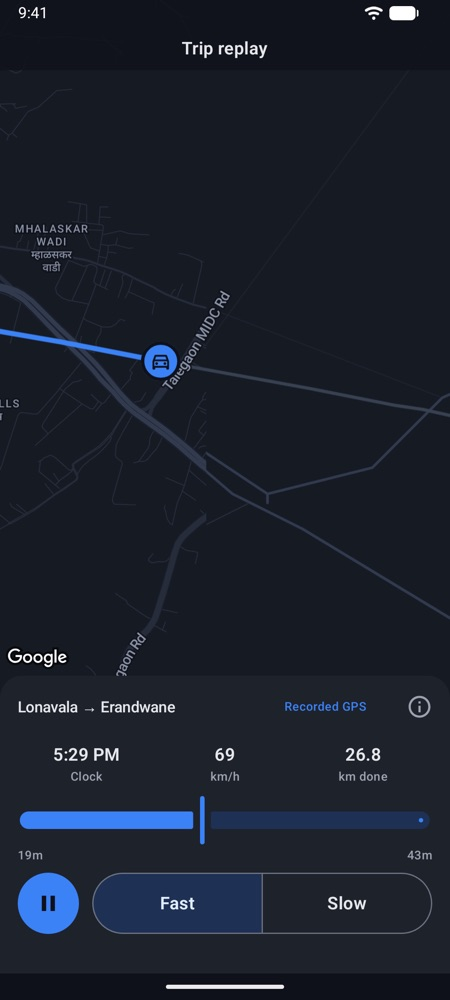
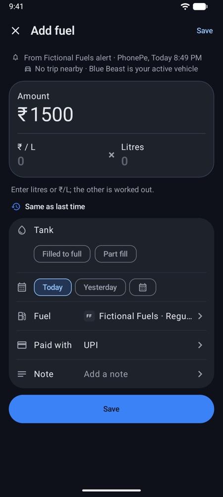

How AutoMate works
What happens behind the scenes, so you know what to expect and why AutoMate asks for what it asks.
Trips start and end on their own
Your vehicle's Bluetooth is the trigger. A car stereo or hands-free kit connects when you start the car and drops when you switch off, so it says reliably when this vehicle is being driven, not a bus or a friend's car.
- Start: your phone connects to the vehicle's Bluetooth; recording starts once you move, even with AutoMate closed.
- End: about 15 seconds after you've parked and the Bluetooth link is gone, or when you walk away. AutoMate remembers where you parked.
- Short stops: drive off within 15 minutes from the same spot, say after a fuel stop, and it's still one trip.
- Scooters whose Bluetooth doesn't stay connected are recognised by their signal instead.
- On the trip page: the route, city and highway split, speed, stops, a replay, and what the drive cost.


Places and tags
Save places like Home and Office and trips are named after them (“Home → Office”); other ends get their area name. Tag trips (Office, Weekend, your own); once you've tagged a route the same way a few times, new trips on it tag themselves, marked ✨. Wrong? Remove it and tell AutoMate never to tag that route.
Fill-ups from your payments
With Read payment notifications on, AutoMate reads payment notifications from your SMS, UPI and bank apps as they arrive, on the phone.
- A payment to a fuel pump turns into a fill-up with the amount filled in; one tap to save.
- When the payee's name doesn't say what it was, AutoMate looks at where the vehicle stopped. Your saved places and spots it has learned come first; a paid Google lookup is the last resort, and its answer is remembered.
- Payments that aren't for the vehicle are skipped. Nothing counts as spend until you log it.
- You choose what notifies you (fuel by default); everything else waits quietly under the bell.


Mileage you can trust
You enter the mileage you really get, for the city and the highway, not the brochure figure. AutoMate prices each trip from its own city and highway kilometres. After three fill-ups and a full tank agree, it starts fine-tuning your figure, at most 5% at a time, and shows every change. Switch it off any time.
FASTag
Toll and FASTag parking alerts are logged on their own, with the plaza and balance, and matched to the trip they happened on. When the balance runs low you get a heads-up. FASTag is for cars, so it's hidden for bikes and scooters.
Garage and reminders
Log each service with its bill or job card (scan it with the camera). Set reminders by date, kilometres or both for service, PUC, insurance and tyres; overdue items turn red.
Your data
Everything stays on your phone; there's no account and no cloud. An optional app lock uses your fingerprint or face. To move phones, export one .automate file and restore it on the new phone. Details in Privacy.